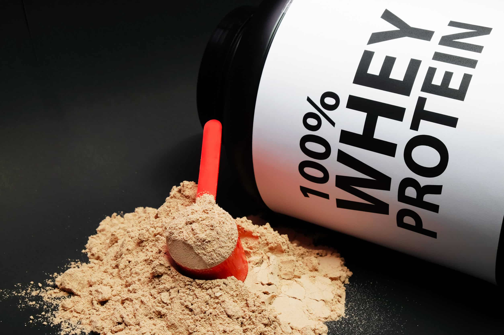
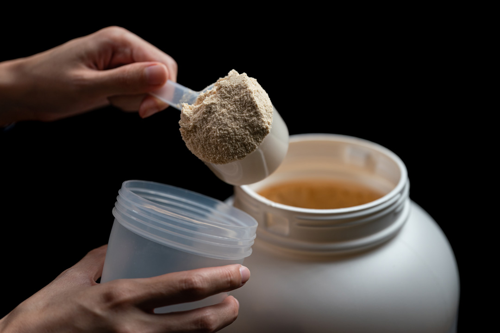

WHEY PROTEIN ESTIMULA O AUMENTO DO VOLUME MUSCULAR

O consumo de Whey Protein 80% pós-treino estimula o aumento da massa magra e auxilia seus músculos a crescerem.
Isso acontece porque ele fornece as proteínas de alto valor biológico e os aminoácidos essenciais que são usados no processo de aumento de massa muscular e na manutenção do tecido muscular.
Por essa razão, o whey protein é utilizado, principalmente, por praticantes de atividade física e atletas de alto desempenho.
Quem pratica musculação precisa ingerir uma quantidade maior de proteínas, para que o músculo se desenvolva de maneira eficiente.
A proteína presente no soro do leite é uma excelente fonte de aminoácidos essenciais, como os BCAA´s.
A proteína concentrada é uma das mais indicadas para quem está focado na hipertrofia e precisa de uma boa quantidade de proteínas na dieta para suprir as necessidades do treino.
WHEY PROTEIN RECUPERA SEU TECIDO E FIBRAS MUSCULARES E COMBATE INFLAMAÇÕES PARA UM TREINO PODEROSO
A ingestão de whey protein favorece a recuperação do tecido muscular e a recuperação das fibras, porque os nutrientes do whey são exatamente o que o tecido muscular necessita em uma situação pós-treino.
O Whey Protein ajuda na recuperação da fibra muscular depois de um treino de hipertrofia por ser um suplemento rico em aminoácidos essenciais e proteínas de alto valor biológico, que são facilmente absorvidos pelo organismo.
Dessa forma, o consumo de whey é um dos principais meios para auxiliar na recuperação do tecido muscular.
Além dessa vantagem, o suplemento também tem ação anti-inflamatória, o que contribui para uma recuperação mais rápida.
Qual a diferença dos Wheys?

Adquira seu whey-protein
Whey Protein Concentrado:
O whey protein concentrado, também conhecido como WPC, tem em sua composição uma quantidade superior de carboidratos e gorduras quando comparado às versões isoladas e hidrolisadas de proteínas do soro do leite. Porém, isso não faz do WPC uma fonte inferior de proteínas do soro do leite, muito pelo contrário, torna o WPC uma fonte mais nutritiva de Whey protein. Quando o assunto é absorção, o WPC apresenta um processo um pouco mais lento em relação ao WPI (Whey isolado) e WPH (Whey hidrolisado), pois suas moléculas são maiores
Whey Protein Isolado:
O whey protein isolado, também conhecido como WPI, tem como sua principal característica a baixa concentração de carboidratos, calorias e gorduras. E isso faz dele um whey de rápida digestão e absorção. Largamente utilizado no período pós treino, pois fornece alta disponibilidade de aminoácidos no período imediato após o término dos exercícios, otimizando assim a recuperação muscular e acelerando o ganho de massa.
Whey Protein Hidrolisado:
O whey protein hidrolisado é o tipo de proteína do soro do leite com maior digestibilidade e mais rápida absorção no organismo. O whey protein hidrolisado passa por um processo chamado de hidrólise, mais conhecido como a quebra das moléculas que faz com que a proteína chegue ao organismo em menor tamanho, por isso, apresenta mais rápida absorção e melhor digestibilidade. É por esse motivo que o WPH tem a absorção e digestão mais rápida do que o WPI e WPC, sendo indicada para pessoas que buscam a mais rápida disponibilidade de aminoácidos essenciais para seus músculos.